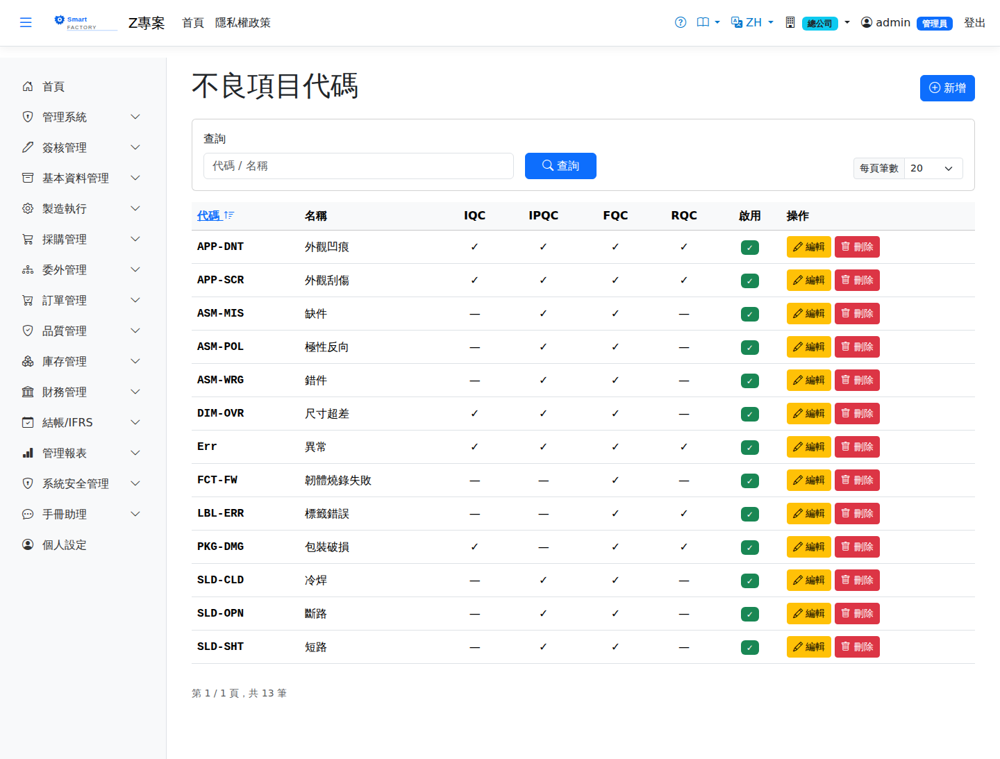

不良項目代碼Defect Codes
路由：/DefectCode | 不良原因分類代碼維護Route: /DefectCode | Maintaining defect reason codes
維護檢驗與報工共用的不良項目代碼（外觀、尺寸、功能等分類），供不良統計與 NCR 分析。報工輸入不良品時必須選擇不良原因代碼。Maintains the defect codes shared by inspection and production reporting (appearance, dimension, function and so on) for defect statistics and NCR analysis. A defect reason code has to be chosen whenever defects are reported.

不良項目代碼畫面截圖（示意，實際欄位/資料依權限與查詢條件而異）Defect code screenshot (illustrative; actual fields and data vary by permission and query criteria)
查詢Search
1
查詢列輸入條件後點「查詢」；欄位標題可點擊排序，清單下方有分頁導航。Enter your criteria on the query bar and click "Search"; column headers can be clicked to sort, and the paging controls sit below the list.
作業流程Process
維護代碼Maintain codes
1
點「新增」填入代碼、名稱與分類，儲存即可在檢驗/報工選用。Click "Add", enter the code, name and category; once saved it can be chosen during inspection and production reporting.
2
停用代碼不影響歷史紀錄，僅新單不可再選。Deactivating a code leaves historical records alone; it simply cannot be chosen on new documents.
欄位說明Field reference
查詢條件Query criteria
| 條件Condition | 說明Guide |
|---|---|
| 查詢Search | 代碼或名稱的模糊比對Partial match on the code or the name |
欄位Field
| 欄位Field | 說明Guide |
|---|---|
| 代碼Code | 必填Required 不良代碼的唯一識別，建立後不可修改Unique identifier of the defect code; cannot be changed after creation |
| 名稱Name | 必填Required 不良現象的描述（如刮傷、尺寸超差）Description of the defect (a scratch, an out-of-tolerance dimension …) |
| IQC / IPQC / FQC / RQC | 勾選此代碼可在哪些檢驗階段選用：進料檢驗／製程檢驗／完工檢驗／退貨檢驗。未勾選的階段不會出現此代碼Tick the inspection stages this code can be used in: incoming, in-process, final and return inspection. It does not appear in the stages that are not ticked |
| 啟用Active | 停用後無法在新的檢驗與報工中選取，既有紀錄不受影響Once inactive, it cannot be chosen for new inspections or production reports; existing records are unaffected |
| 備註Notes | 判定標準或範例的補充說明Notes on the acceptance criteria or examples |